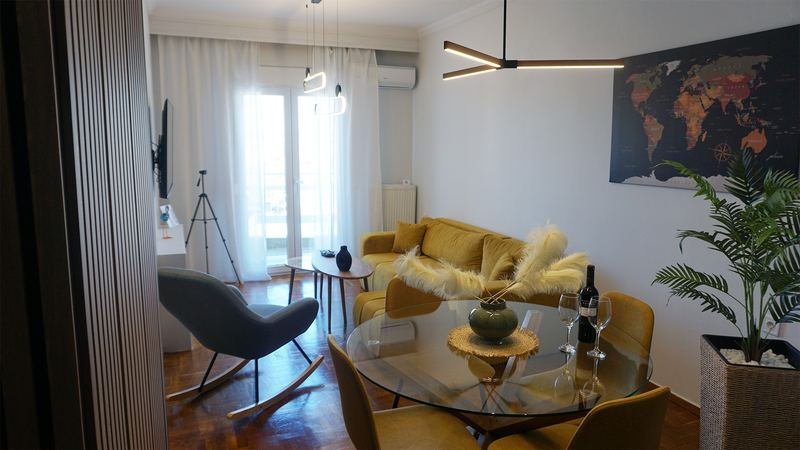

O smeštaju
do 6 osoba · 2 spavaće sobe · 2 kreveta · 1 kauč na razvlačenje · 1 kupatilo · 60 m²
Svetao, potpuno renoviran stan od 60 m² sa panoramskim pogledom na ceo Solun, od Bele kule do šume Sejh Su, i more na horizontu.
Spojeni dnevni boravak i trpezarija sa drvenim podom, električnim kaminom i velikim televizorom. Kauč se razvlači u krevet.
Dve spavaće sobe sa televizorom i klima-uređajem: prva sa bračnim krevetom 160×200, radnim stolom i izlazom na balkon, druga sa bračnim krevetom 140×200.
Potpuno opremljena kuhinja sa rernom, keramičkom pločom, frižiderom, mikrotalasnom, Nespresso aparatom, kuvalom za vodu i tosterom, kao i šankom za doručak.
Moderno kupatilo sa tušem sa kišnom ružom, peškirima, bade-mantilima i kozmetikom.
Balkon sa stočićem i stolicama gleda na grad: idealan za jutarnju kafu ili čašu vina uveče.
Sadržaji
- Panoramski pogled na grad
- Balkon
- Wi-Fi
- Klima-uređaj
- Grejanje
- Električni kamin
- Televizor
- Potpuno opremljena kuhinja
- Nespresso aparat
- Aparat za filter kafu
- Rerna i mikrotalasna
- Mašina za veš
- Tuš sa kišnom ružom
- Posteljina
- Peškiri za kupanje i lice
- Bade-mantili
- Šampon i gel za tuširanje
- Četkice i pasta za zube
- Papuče
- Poklon dobrodošlice: vino, keks i kafa
- Kauč na razvlačenje
- Radni sto
- Lift
- Kućni ljubimci na zahtev
- Bebi krevetac besplatno
- Samostalni ulazak uz kutiju za ključeve
Lokacija
Lysimachou Kaftantzoglou 32, 546 39 Thessaloniki